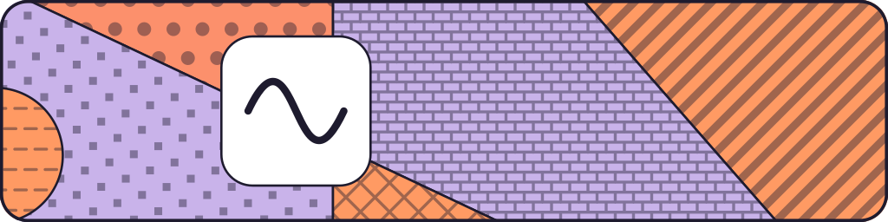
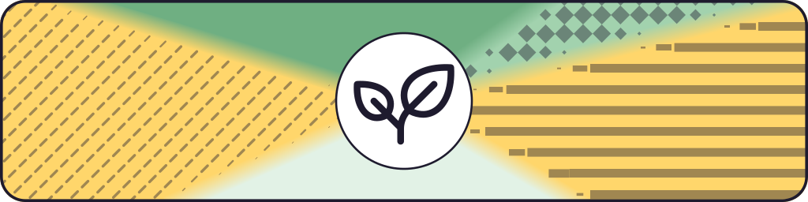
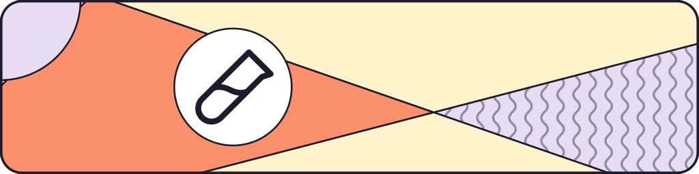
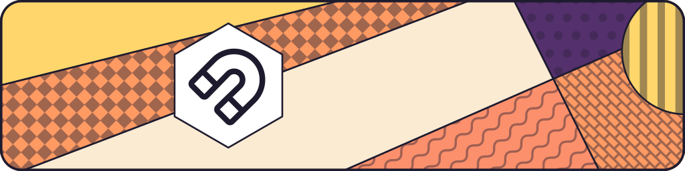
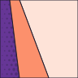
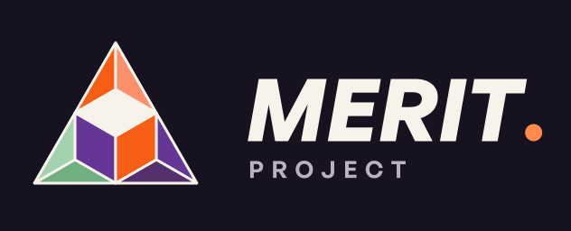
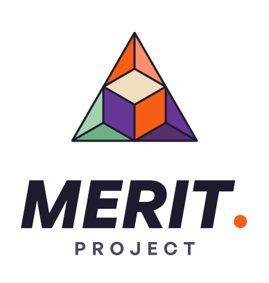

Learn it. Level up.
Earn Merit.
The single source of truth for how Merit looks and feels on the Flutter app, the student/admin web app and the landing page. It is warm, calm enough to study on, and bright enough to celebrate every streak.

Warm, clear, quietly playful.
Merit is a gamified exam-prep platform for Sri Lankan O/L and A/L students: quizzes, flashcards, past papers, streaks and adaptive practice in Sinhala, Tamil and English. v3 keeps the game but sets it on a calm, warm canvas that suits hours of study.
Calm canvas
A warm off-white page, slate text, and soft depth with no hard outlines on UI chrome. It is easy on the eyes for long reading sessions.
Earned energy
Orange, sparkles and brush underlines are saved for actions, rewards and celebration. They feel earned because they are rare.
Patchwork learning
Every subject, topic and subtopic has its own patchwork: an icon on geometric patches no other node shares. The illustration system doubles as navigation.
- Be short and confident: "Keep your streak alive."
- Encourage: "Hit your weak spots first."
- Say exactly what happens: "12 of 50 questions today."
- Shame or pressure: "You're falling behind!"
- Use corporate filler: "Leverage our solutions".
- Use emoji as UI icons. Emoji are fine in celebratory copy.
Warm energy, violet depth.
There are two hue families: orange → coral → sand for energy and violet for focus, links and premium. They sit on a warm canvas with ink-slate text. Sage means success, butter means rewards, and blush and sky are only for subject categories. Click a swatch to copy its hex value.
The orange rule (D9)
Brand orange #F65E16 always carries an ink label (5.22:1). White on orange fails WCAG, so dense or long labels use primaryStrong (burnt orange with a white label, 5.82:1).
Violet for focus
Orange is too light for a focus ring on the canvas (2.85:1), so links, the focus ring and form selection all use violet. Selection never uses sage, because sage means "achieved" (D5).
One display face, one reading face.
General Sans (D8) handles headings, numbers, the wordmark and the italic emphasis voice. Plus Jakarta Sans handles everything you read. Sinhala and Tamil fall back to Noto Sans Sinhala and Noto Sans Tamil. Nothing is smaller than 11 px, and no weight goes above 700.
| Style | Specimen | Spec |
|---|
Start learning with free past papers.
Use at most one underlined word per heading. The brush stroke is a decoration under the text box, so it works under Sinhala and Tamil too.
Timers, points and ranks always use tabular-nums (type.numeric.*), so the digits don't jitter as they change.
Soft depth, no hard edges.
v3 retires the neo-brutalist black outline and hard shadow (D11). Cards float on soft, violet-tinted elevation with no border. Ink outlines are reserved for illustration, filter chips and patchwork, where they read as drawing rather than chrome.
Flat. Wells, compact rows.
Cards, chips, search.
Tab bar, toasts, hover.
Dialogs, sheets.
| Radius | Value | Use |
|---|
| Border | Value | Use |
|---|---|---|
hairline | 1px | Dividers, compact table cells |
base | 1.5px | Inputs, filter chips, patchwork outlines |
strong | 2px | Selected / focused component edge |
Cards never combine a border with elevation.
.card {
background: var(--merit-surface-default);
border-radius: var(--merit-radius-xl); /* 24 */
box-shadow: var(--merit-elevation-e1); /* no border */
}final c = context.meritColors;
DecoratedBox(
decoration: BoxDecoration(
color: c.surfaceDefault,
borderRadius: BorderRadius.circular(MeritRadii.xl),
boxShadow: c.elevationE1, // List<BoxShadow>, themed
),
child: child,
);A 4-point rhythm.
Spacing steps by 4. Expressive screens (student app, landing) pad cards by 16–24. Compact screens (admin) pad by 8–12. Touch targets are at least 48 dp on every platform.
Motion has a job, or it's off.
Presses run 120 ms, toggles and tabs 180 ms, sheets and card flips 280 ms, and celebrations 600 ms. All motion uses the standard curve. Under reduced motion there is no shimmer, no twinkle and no flip (a crossfade replaces it).
Moves down 1 px and drops to e0.
Calm to study, energy to celebrate.
Merit is both an exam room and a game, and each screen picks one mode (D15). The full criteria are in research/v3/edu-theming-criteria.md.
Quiz-taking, paper mode, notes
- Canvas or white surfaces, slate text, violet selection
- No sparkles, patchwork or brush underlines
- One orange action at most ("Submit")
- The timer stays neutral until 5 min, then turns butter, then red
Home, rewards, results, leaderboard, landing
- Orange CTAs, butter coins, an orange flame
- Patchwork tiles, sparkles, the brush underline
- Celebration motion up to 600 ms
- At most one Achiever band per screen
Pills, always.
Sizes are S 36, M 48 and L 56. Loading swaps the label for a spinner and keeps the width. Disabled sets opacity to .4 and removes elevation. Icons are Phosphor at 1.15em.
.btn-primary {
min-height: var(--merit-size-button-md);
border-radius: var(--merit-radius-pill);
background: var(--merit-action-primary);
color: var(--merit-text-on-primary); /* ink, never white (D9) */
box-shadow: var(--merit-elevation-e1);
}
.btn-primary:hover { background: var(--merit-action-primary-pressed); }final c = context.meritColors;
FilledButton(
style: FilledButton.styleFrom(
backgroundColor: c.actionPrimary,
foregroundColor: c.textOnPrimary,
minimumSize: const Size.fromHeight(MeritSize.buttonMd),
shape: const StadiumBorder(),
textStyle: MeritTypeScale.titleSm,
),
onPressed: onStart,
child: const Text('Start practice'),
);Borderless and lifted.
Neutral is white with e1. Feature is the violet band. Reward is butter. Success is sage-subtle. Selected adds a 2 px violet inset. Interactive cards rise to e2 on hover.

Cell biology
12 of 18 subtopicsAdaptive mode
Your weak spots, first.
Points earned today
Paper mode
A timed past paper. 2 attempts left today.
Labels always visible.
Inputs have a 1.5 px edge at ≥3:1 and a 16 radius. Focus adds a violet border and a soft ring. Help and error text sit below the field, and errors carry an icon.
A white pill with e2 and a round orange action. Use it for subject, topic and notes search.
Filter, tag, celebrate.
Filter chips have an ink outline, and the selected one fills violet. Badges are flat, at least 24 high, with an 11.5 px label. Subject badges carry their patchwork tile.
Always show the next step.
Fills are orange in energy screens and violet in calm screens (quiz progress). Rings carry a tabular number. In the stepper, done is sage with a ✓, current is orange, and to-do is sunken, with a dotted connector between steps.
Selected ≠ achieved.
D5 still applies. Form selection is violet with a white ✓. Completion (a todo done, a stage cleared) is sage with an ink ✓. The two must never look alike.
Lifted, never boxed.
Dialogs and sheets use e3 and a 32 radius over a 50% ink scrim. Toasts are inverse, use e2, last 4 s, and carry an icon and at most one action.
Leave this paper?
Your answers are saved, but the timer keeps running.
Report a question
Visible focus, everywhere.
Focus is a 3 px violet outline with a 2 px offset (≥3:1 on every surface). Tab through the row below. Hover darkens fills or lifts cards. Disabled is .4 opacity with no elevation.
Make progress feel good.
The orange flame is the streak. The butter coin is points. Wanderer and Achiever are clearly distinct tiers. Every number is tabular.
✓T
✓W
✓T
!FSS
| 18 correct × 10 | 180 |
| Accuracy ≥ 80% bonus | +20 |
| Achiever × 1.5 | ×1.5 |
| Total | 300 |
Unlimited practice. 1.5× points.
Adaptive mode finds your weak spots first. Cancel anytime.
The exam room is calm.
Options are at least 56 high and carry a letter chip. Once submitted, they lock. Correct and wrong always pair colour with an icon. The correct answer after a wrong pick shows as "revealed", with a dashed border. The timer turns butter at 5 min and red at 1 min, and announces both.
Which organelle modifies and packages proteins for secretion?
Which organelle contains hydrolytic enzymes?
Flip, rate, repeat.
The front takes the subject's category tint with a pattern corner. The back is white. The flip is 2 × slow, and becomes a crossfade under reduced motion. The four FSRS ratings run from coral through sand and sage to violet. Click the card to flip it.
The hierarchy, as a path.
Subject → Topic → Subtopic, drawn as connected tiles (D14). Done is sage with a ✓. Current is a larger orange tile with a sparkle and its %. Locked is sunken with a lock icon. The path scrolls horizontally on mobile.
One picture, one line, one action.
State spots are line art: one flat blob and a single ink line drawing. They never use patches, patterns or pack icons, so an empty or error state can't be mistaken for a subject or topic. Skeletons are sunken blocks with no border, and the shimmer stops under reduced motion.
No flashcards yet
Save a question to start a deck.

You're offline
We'll sync your answers when you reconnect.
Every node, its own patchwork.
Each Subject, Topic and Subtopic gets a generated patchwork: wedge-shaped patches that all meet at the node's centred icon, each a tint or one of 16 geometric patterns. A subject has 4 patches; a topic keeps its subject's 4 and adds 1 (5); a subtopic keeps its topic's 5 and adds 1 (6). Rows stretch the same wedges sideways around the centred icon. Subject icons are unique across the app, topic and subtopic icons are unique within their subject, and no two nodes share a composition. Patchworks are for hierarchy widgets only. Generator: scripts/patchwork/ (SKILL.md §12). The demo below uses MIT Phosphor glyphs; production icons live in the private content repo.




Flashcard and note tiles carry their subtopic's patches in the top-right corner. No icon. Questions don't.
What do guard cells control?
Tap to flip


tile 1:1 grids · row 4:1 lists · corner card corners, breadcrumbs · mono currentColor for dense tables and chips.
sha256(node_id ‖ icon_sha256 ‖ engine) seeds the layout, tints, patterns and plate. A registry checks the composition key across every node in every subject and re-rolls a salt on collision, so outputs are stable and unique. The quest:<subtopic>:<n> namespace is reserved for Quests.
- Use a node's own patchwork wherever that node appears: grids, lists, headers, its flashcards and notes
- Fall back to the category tint plus a Phosphor duotone icon if no patchwork is published yet
- Regenerate from the script and never edit SVGs by hand
- Use patterns + icons for anything that is not a hierarchy node (modes, rewards, empty states)
- Add sparkles, shadows or gradients to a patchwork
- Reuse another node's patchwork, even for a related topic
Phosphor, three weights.
D12: Regular by default (it matches the 1.5 outlines), Fill for active and selected states, and Duotone on category and feature chips. Use 20–24 px in UI. Icons inherit text colour unless they are a reward glyph. Flutter uses phosphor_flutter, and the web uses @phosphor-icons/react through @/lib/icons.
Three scripts, one rhythm.
General Sans and Jakarta have no Sinhala or Tamil glyphs, so every stack falls back to Noto. For SI/TA: tracking 0, body line-height at least 1.6, no uppercase eyebrows (they render in normal case), and buttons and chips must wrap, because Tamil runs about 30–40% longer. The SI/TA strings here are specimen copy, and the shipped wording comes from the apps' i18n files after native review.
Keep your streak alive
Answer 10 questions today to keep your 12-day streak.
ඔබේ දිගු කාලීන ඉගෙනුම රැක ගන්න
ඔබේ දින 12 ක ශ්රේණිය රැක ගැනීමට අද ප්රශ්න 10 කට පිළිතුරු දෙන්න.
உங்கள் தொடர்ச்சியைத் தக்கவைத்துக் கொள்ளுங்கள்
உங்கள் 12 நாள் தொடர்ச்சியைத் தக்கவைக்க இன்று 10 கேள்விகளுக்குப் பதிலளிக்கவும்.
Legend and tooltip, always.
The categorical palette is chart.1–5: violet, orange, sage, butter, sky. The streak heatmap is a four-step orange ramp on sunken. Never rely on colour alone, so always include a legend and data labels.
Expressive vs compact.
The student app and landing are expressive: 16–24 padding, e1–e2, patchwork. Admin and contributor screens are compact (D7): 8–12 padding, hairline rows, e0–e1, no patchwork in tables, and elevation only on primary actions and floating layers.
Questions
| ID | Question | Subtopic | Lang | Status | |
|---|---|---|---|---|---|
| Q-1042 | Which organelle packages proteins… | Organelles | EN · SI | Published | |
| Q-1043 | Define enzyme specificity… | Enzymes | EN | In review | |
| Q-1044 | Stages of mitosis in order… | Cell division | TA | Draft |
The patchwork mark.
The Merit mark is already a patchwork. v3 recolours it, drops the hard shadow and thins the outlines. The wordmark is General Sans Bold Italic with an orange full stop (D13). Keep clear space equal to the dot's diameter × 2. The coin turns butter.




Violet-black, not grey.
The dark base is #17121F, so it still feels like the brand. Orange lifts to #FF8A4C, and links and focus use violet #C9B3EA. Depth comes mostly from surface steps, and the shadows are black. Use the toggle in the sidebar to re-render this whole page in dark. Every token pair is gated for contrast in both themes.
How it comes together.
These are reference compositions for the Flutter app, built only from the components above. They are not pixel specs, but each one shows its mode and its key tokens.
Hi, Dilini

Answer 10 Chemistry questions


Which organelle modifies and packages proteins for secretion?
Brilliant work!
Leaderboard
Study without limits.
Unlimited questions and papers, adaptive mode, 1.5× points.
එන්සයිම ක්රියාකාරිත්වය
එන්සයිම යනු ජෛව රසායනික ප්රතික්රියා වේගවත් කරන ප්රෝටීන වේ. ඒවා ප්රතික්රියාවේ සක්රියන ශක්තිය අඩු කරයි.
The front door.
The landing page uses the same tokens as the product. School Times is retired (D13). The pattern runs: an eyebrow, a headline with one underlined word, one line of body, a pill search, then a patchwork cluster joined by a dotted path. A violet band with an orange cap closes the page.
Past papers, practice and progress, in one place.
More than 10,000 questions mapped to the syllabus, with streaks, leaderboards and adaptive practice that finds your weak spots.
Three ways
to practise
Paper mode
Timed past papers, marked instantly.
Mastery mode
Topic by topic, at your pace.
Adaptive mode
Your weak spots, first.
Start free today.
Questions and past papers every day on Wanderer. No card needed.
Read live, never copied.
These values are read at runtime from build/css/merit-tokens.css, which is generated from tokens/*.tokens.json by npm run build. The Flutter and web apps vendor the generated files, and CI fails on drift.
v3.1.0
- v3.1.0 · Hierarchy patchworks (D16). Every subject, topic and subtopic gets its own generated patchwork with 16 patterns, a signature and a uniqueness registry (§21). State spots are now line art. The new tokens are
patchwork.*, and the six shared category tiles are removed. - v3.0.0 · Full reinvention inspired by MindInventory's "Online Learning" shot. The palette, depth model, display face and illustration kit are all new (D8–D15).
- Semantic token names are kept wherever their meaning holds. The hard-shadow tokens,
shadow.color,borderWidth.heavy,fontFamily.landingand the v2 primitive names are removed. - Soft themed
elevation.e0–e3is new.text.onPrimaryis now ink. - The contrast gate runs 126 checks, and all pass AA in light and dark.
The rename map is in CHANGELOG.md, and consumer steps are in MIGRATION-v3.md.